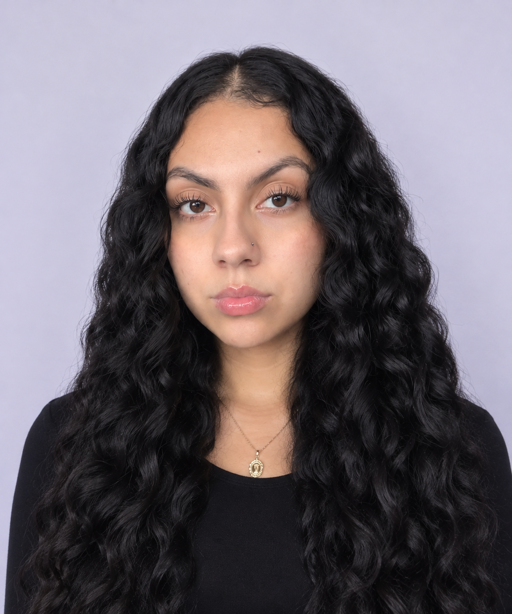

Personal Statement
I am committed to growing in the business and management field by embracing new challenges, expanding my skills, and building a successful future as a leader and entrepreneur.

Skills
I bring a strong commitment to learning and developing skills that will help me succeed professionally.
- Reliability
- Adaptability
- Commitment
- Teamwork
- Communication
- Organization
- Problem-Solving
- Social Media Management
- Product Promotion
Projects
Social Media Marketing and Product Promotion
I help manage my workplace's social media accounts by creating and sharing content to promote products. This helps customers learn about the products we offer while allowing me to develop my creativity, communication, and marketing skills.
Skills: Social media management, product promotion, creativity, communication, and marketing.